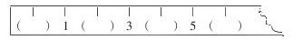
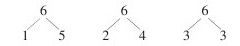
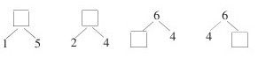

“6的认识”教学设计 [1]
“6的认识”是六年制小学《数学》第一册第一单元10以内数的认识和加减法中的后段教材。第一段是1-5的认识及有关加减；第二段是0的认识；后段是6-10的认识及加、减法。6的认识是后段教材的开始。这部分内容是学习20以内的进位加法和退位减法的基础，因此，必须切实学好。
在教法上力求做到教师的演示与学生的观察、操作、表述相结合，充分调动学生的学习积极性，让多种感官参加教学活动。
教学可这样进行：
一、基础训练
1.写出1-5各数。
2.说出5是由哪两个数组成的？
3.在直尺图上填空：

二、导入新课
根据学生填空情况，对填正确的同学进行表扬：“老师没讲，你们就填对了，真了不起。”（如果学生填不出6，教师可以直接导入）。“最后的括号里应该填6，这就是我们今天学习的新内容”。
板书6的认识
三、进行新课
（一）认识6
1.让学生翻开书16页，观察6的主题图。（也可以用投影仪放6的认识彩色图片，这样醒目，便于观察）。数一数，图上一共有几个人？（6个）。几个红军老爷爷，几个少先队员？（1个、5个）。几个男的，几个女的？（3个、3个）。坐在凳子上的几个。坐在地上的几个？（4个、2个）……让同学们从不同角度观察，说出总数都是6。
2.让学生观察教室里的人或物，说出哪些都可以用6表示？（如：6个小组、6个女同学、6块玻璃、6支铅笔……）
3.叫一名同学到讲台前拨珠子。先在计数器上拨5个珠子，再拨1个，问一共有几个珠子？
4.让学生摆学具，摆出6个。问学生，你是怎样摆的，先摆几个，后摆几个？
5.教师概括6的实际意义：像这图上的6个人、教室里的6个学习小组、计数器上的6个珠子、同学们摆6个圆片、6个三角形、教师手里拿着6根粉笔……这些数量是6的人或物，都用6来表示。
6.看直尺图上6所处的位置（基本训练第3题）。刚才填错的同学改正过来，如果没填的同学填上。填好后问：你知道为什么要填6吗？6比5多1，6在5的后面；5比6少1，5在6的前面。
7.按直尺上的顺序读数，顺着读，倒着读。
（二）写6
1.先看6的字形。教师拿出口哨，吹一下，问：“6像不像口哨？”
2.教师仿照口哨的形状写6。先写印刷体，再写手写体。说明6只是一笔，强调6的各部分在田字格里所占的位置。
3.书写6。在桌面上用手练习写6。在课本上描6、写6。
（三）课堂练习
1.问同学们还有哪些东西可以用6表示？诸如6个苹果、6只鸭、6块糖等。
2.比一比，看谁写的6好。选出前6名，戴小红花。
3.结合比赛名次，教师讲解基数和序数的不同含义。
（四）学习6的组成
1.让同学们回忆一下刚才看过的课本上的主题图或摆的学具，说一说几和几组成6？
2.学生回答，教师在黑板上书写：

让同学们看看前两组，问：还能想到什么？（1和5组成6，想到5和1组成6；2和4组成6，想到4和2组成6）。
3.让学生按照两种表述的方式（几和几组成6、6可以分成几和几）。完整地说出6的组成。
（五）巩固练习
1.填空：

2.对口令：老师说一个数，看谁能又快又正确的说出另外一个数，组成6。
3.同座位同学或前后排的同学相对而坐，拍手做游戏：我拍手，你拍手，我俩拍手做朋友。我说数，你说数，看看是否组成6？（一个同学说，另一个同学回答，这样交替进行，互问互答。）
四、课堂小结
今天我们学习了“6的认识”，同学们积极性很高，不但学会了数6，而且学会了6的写法及组成。课后，看哪些同学能根据6的组成写出加法算式？试试看。